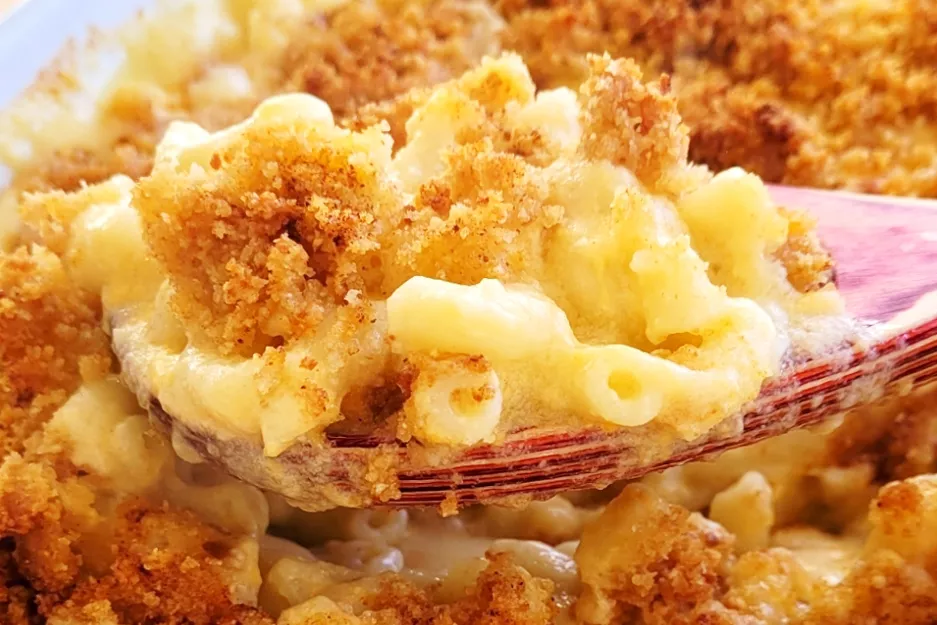

Mac and Cheese
Back to All Recipes

How to Make Mac and Cheese
Making lasagna can be time-consuming, but the results are well worth the wait. You'll find a ingredient list and step-by-step instructions in the recipe below, but let's go over the basics:
Ingredients:
- Macaroni
- Butter and Flour
- Milk
- Cheese
- Seasonings
- Bread Crumbs
How to Make Mac and Cheese Step-By-Step
You'll find the full, step-by-step recipe below — but here's a brief overview of what you can expect when you make this crowd-pleasing homemade mac and cheese:
- Boil the noodles: Boil the macaroni in salted water until the noodles are al dente. Drain and transfer to a prepared baking dish.
- Make the cheese sauce:Melt butter, then whisk in the flour. Whisk in the milk, bring to a simmer, and stir in the cheeses. Season with salt and pepper and continue simmering until the sauce is thick. Pour the sauce over the noodles and stir.
- Make the topping: Melt two tablespoons of butter in a skillet, add the bread crumbs, and toast until the crumbs are brown. Spread the topping over the macaroni and cheese, then sprinkle with paprika.
- Bake the mac and cheeseBake in the preheated oven until the topping is golden brown.
Back to All Recipes